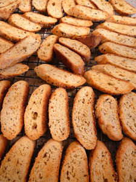

Party on: parmesan-pepper biscotti
As Leland has said, the whole family spent three days preparing for our big holiday party. If my final count is accurate, we had 118 attendees, and they were fed well by Leland and me. We determined early on to restrict ourselves to finger foods, not wanting to get involved with flatware, serving pieces, etc. We also tried to find dishes that could be made in advance and served cold or at room temperature.
Some people think it’s foolhardy to try new recipes when you’re cooking for company but I do it all the time. I think when you’ve been cooking for many years that you get a sense of what will work and what will be good. And actually, one of my long-time recipes, for pecan pie squares, punked out on me; I think because I outsmarted myself trying to make it easier to get them out the baking pan by lining it with non-stick foil—the filling ingredients seeped under the foil and turned the whole pan of cookies into a sticky, gooey mess.

One of the first-time recipes I tried I found on Epicurious, for parmesan-pepper biscotti, and wonderfully tasty, savory, crunchy treats they were, too. The only drawback was that I had made a lot of sweet biscotti as well, and should probably have labeled these as savory; some folks got a surprise upon dipping them into coffee.
Parmesan-pepper biscotti
- 1 1/2 tablespoons whole black peppercorns
- 4 cups all-purpose flour plus additional for dusting
- 2 teaspoons baking powder
- 2 teaspoons salt
- 4 1/2 oz Parmigiano-Reggiano, finely grated (2 1/4 cups)
- 1 1/2 sticks (3/4 cup) cold butter, cut into 1/2-inch cubes
- 4 large eggs
- 1 cup whole milk
Special equipment: an electric coffee/spice grinder
Put oven racks in upper and lower thirds of oven and preheat oven to 350°F.
Pulse peppercorns in grinder until coarsely ground.
Whisk together flour, baking powder, salt, 2 cups cheese, and 1 tablespoon ground black pepper in a large bowl. Blend in butter with a pastry blender or your fingertips until mixture resembles coarse meal. Whisk 3 eggs with milk and add to flour mixture, stirring with a fork until a soft dough forms.
Turn dough out onto a lightly floured surface and quarter dough. Using well-floured hands, form each piece into a slightly flattened 12-inch-long log (about 2 inches wide and 3/4 inch high). Transfer logs to 2 ungreased large baking sheets, arranging logs about 3 inches apart.
Whisk remaining egg and brush some over logs, then sprinkle tops of logs evenly with remaining 1/4 cup cheese and 1/2 tablespoon ground pepper. Bake, rotating sheets 180 degrees and switching position of sheets halfway through baking, until logs are pale golden and firm, about 30 minutes total. Cool logs to warm on sheets on a rack, about 10 minutes.
Reduce oven temperature to 300°F.
Carefully transfer 1 warm log to a cutting board and cut diagonally into 1/2-inch-thick slices with a serrated knife. Arrange slices, cut sides down, in 1 layer on a baking sheet. Repeat with remaining logs, transferring slices to sheets. Bake, turning over once, until golden and crisp, 35 to 45 minutes total. Cool biscotti on baking sheets on racks, about 15 minutes.
Makes 5 to 6 dozen.
Cooks’ note: Biscotti keep in an airtight container at room temperature 2 weeks.
Comments
I love the idea of these- and wouldn’t they be amazing with soup? you could dunk them, like you do the sweet ones in coffee. Yum.
Add a comment